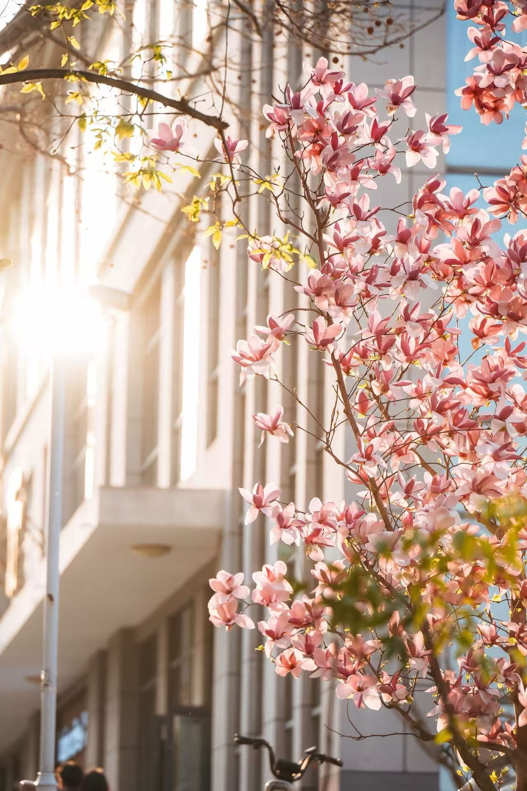
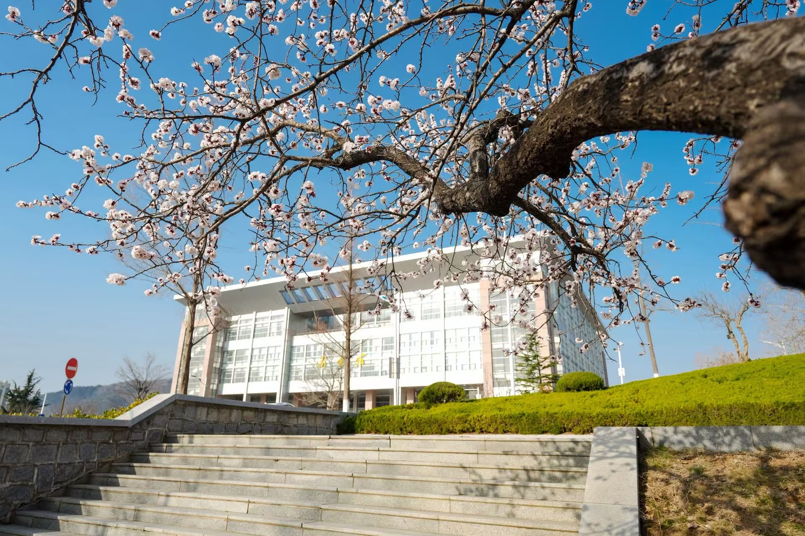

春日的校园，宛如一幅徐徐展开的水墨画卷，处处弥漫着生机与诗意。清晨的阳光穿过层层叠叠的枝叶，在铺满青石的小路上洒下斑驳的光影，微风拂过，带来了花草的清香与泥土的芬芳，让每一个步入校园的人都心生欢喜。校园的中央有一片静谧的湖泊，湖水清澈见底，倒映着蓝天、白云与岸边的垂柳，偶尔有几尾小鱼在水中欢快地游弋，泛起一圈圈细碎的涟漪，为这方宁静的天地增添了几分灵动。湖边的迎春花肆意绽放，嫩黄的花瓣簇拥在一起，像是给岸边镶上了一道金色的花边，桃花、杏花也争相开放，粉白相间的花朵缀满枝头，微风一吹，花瓣轻轻飘落，如同漫天飞舞的雪花，浪漫至极。
漫步在校园的林荫道上，满眼都是清新的绿意，高大的香樟树、挺拔的白杨树、婀娜的柳树错落有致地分布在道路两旁，枝叶相互交错，形成了一片天然的绿色穹顶。雨后的校园更是美不胜收，湿润的空气沁人心脾，树叶被雨水冲刷得格外翠绿，花瓣上挂着晶莹的水珠，在阳光的照耀下闪闪发光，像是一颗颗璀璨的珍珠。无论是清晨的晨读时光，还是午后的休闲片刻，校园的自然风光都能让人忘却烦恼，沉浸在这份独属于校园的美好与宁静之中，感受着春天带来的无限希望与活力，也让我们深深爱上这方充满诗意的美丽天地。

